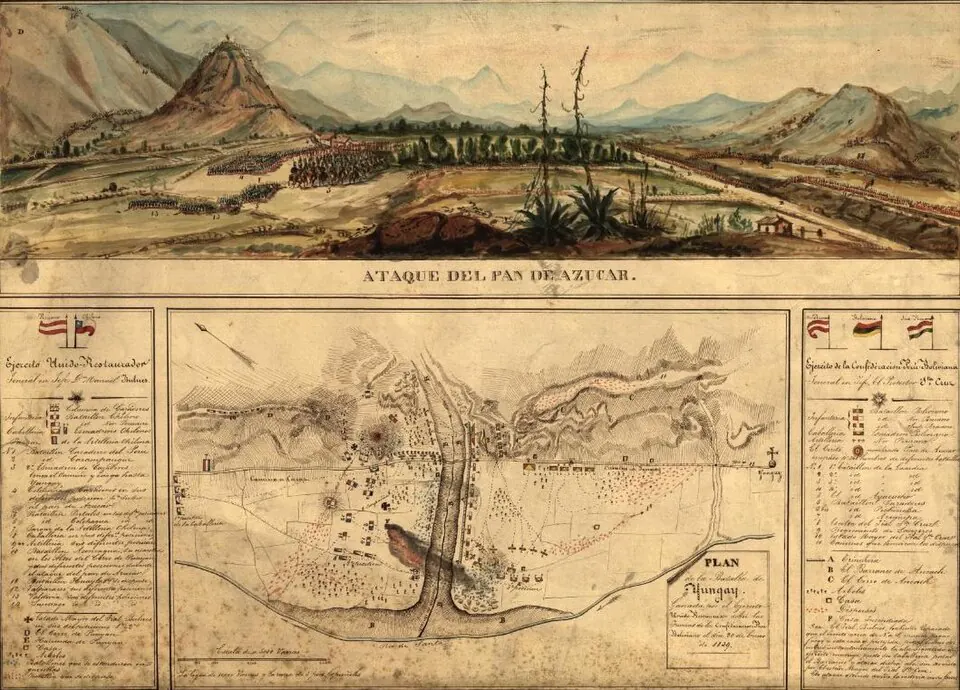

Guerra contra la Confederación Perú-Boliviana

En 1836, el mariscal boliviano Andrés de Santa Cruz creó la Confederación Perú-Boliviana, formada por los estados Nor-Peruano, Sud-Peruano y Bolivia, con él como Protector. El gobierno de José Joaquín Prieto, impulsado por el ministro Diego Portales, la vio como una amenaza: rivalidad comercial entre el Callao y Valparaíso, disputas aduaneras y el apoyo dado en Perú a una expedición del exiliado Ramón Freire contra el gobierno chileno. Chile declaró la guerra a fines de 1836, y Argentina, gobernada por Juan Manuel de Rosas, también lo hizo en 1837.
En junio de 1837 Portales fue asesinado tras un motín militar en Quillota. Una primera expedición, al mando de Manuel Blanco Encalada, firmó el Tratado de Paucarpata (1837), que el gobierno chileno rechazó. La segunda, encabezada por Manuel Bulnes e integrada también por exiliados peruanos contrarios a Santa Cruz, triunfó en la Batalla de Yungay, en Perú, el 20 de enero de 1839, y la Confederación se disolvió.
La victoria afianzó el régimen conservador y llevó a Bulnes a la presidencia en 1841. En Bolivia, Santa Cruz es recordado como un gran estadista; en Perú la guerra tiene una memoria dividida, pues hubo peruanos en ambos bandos.
Versión para niños
En 1836, el gobernante boliviano Andrés de Santa Cruz unió Perú y Bolivia en un solo país grande, llamado Confederación Perú-Boliviana. El gobierno de Chile, con el ministro Diego Portales, pensó que era un peligro para su comercio y su seguridad, y le declaró la guerra. Después de varios años, el ejército chileno, junto a peruanos que se oponían a Santa Cruz y dirigido por Manuel Bulnes, ganó la Batalla de Yungay en 1839. La Confederación se disolvió.
Para maestros
Nivel sugerido: 1° medio
Objetivo: Explicar las causas y consecuencias de la guerra contra la Confederación y su papel en la consolidación del Estado conservador, considerando las miradas de Chile, Perú y Bolivia.
Preguntas para la clase:
- ¿Qué intereses económicos y políticos llevaron a Chile a la guerra?
- ¿Por qué hubo peruanos que lucharon junto al ejército chileno?
- ¿Cómo influyó el triunfo de Yungay en la política chilena posterior?
Actividad (20–30 min): Los estudiantes elaboran un mapa de Sudamérica en 1836 marcando la Confederación, sus tres estados y los puertos rivales (Valparaíso y el Callao). Luego escriben dos párrafos breves que expliquen la guerra: uno desde el punto de vista de un comerciante de Valparaíso y otro desde el de un partidario de Santa Cruz. El evento ocurrió principalmente fuera del territorio actual de Chile, por eso no se ubica en el mapa del sitio.
Fuentes sugeridas: Memoria Chilena; Museo Histórico Nacional; Biblioteca Nacional Digital.
Objetivos de Aprendizaje (Currículum Nacional)
- 6° básico · HI06 OA 05 Describir cómo se conformó el territorio de Chile durante el siglo XIX … la Guerra del Pacífico y diversos conflictos bélicos
- 1° medio · HI1M OA 03 Analizar cómo durante el siglo XIX la geografía política de América Latina y de Europa se reorganizó con el surgimiento del Estado-nación
- 1° medio · HI1M OA 09 Caracterizar la consolidación de la República en Chile, considerando la defensa del territorio nacional, el voto censitario
Personajes
Revisión humana pendiente. Cómo se revisa · Reportar un error
Cómo citar: Historia de Chile. (2026). Guerra contra la Confederación Perú-Boliviana. En Historia de Chile: atlas y línea de tiempo. https://moises-salgado.github.io/historia-de-chile/momento/guerra-contra-la-confederacion-peru-boliviana.html